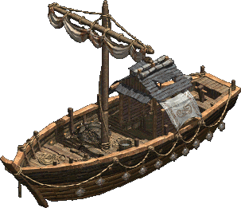
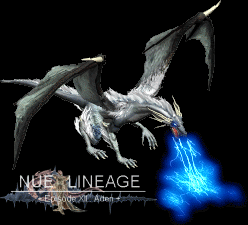
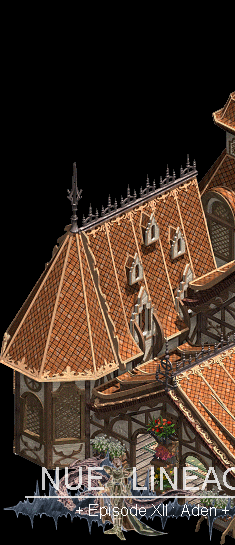
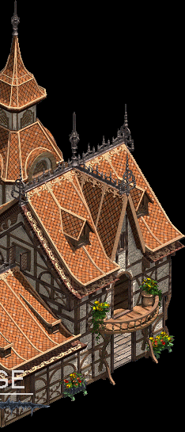

|
2002年12月23日
台灣伺服器12月23日更新內容
原文：台灣天堂官方網站公告
於12/23中午維修後,更新寵物系統(包含迷媚,召喚),寵物若進行攻擊或死亡(PvP),將不會直接影響玩家角色的原善惡值,與韓國設定同步更新,請玩家注意
換句話來說，寵物殺人後主人不會紅、降低正義值或增加PK值。另外玩家殺掉寵物後亦不會有負面形響。此舉可能可以解除召喚師瞬間變紅的Bug，但相信各狗隻亦會成為眾玩家的獵物。
韓國測試伺服器檔案內容
今天韓國測試伺服器更新了約40MB的物件檔案，主要是補完巫妖，風龍和膠質怪的效果圖檔，及加入很多第十二章建築物的門，有關的圖如下：（風龍噴電圖檔取自Nue's Lineage）
雪狼
 小船
 風龍噴電
另外Nue's Lineage亦釋出另一建築物的圖檔：

香港LWC花絮
香港最近開始了LWC的練功時段，重點如下：
1. 法師有齊1級至7級的魔法，這包括神聖之圓及魔法陷阱，但使用後會"沒有任何事情發生"，因此可見此二魔法是未生效的。
2. 各玩家只有一套+0的裝備，10祝防，10祝武，10紅防，10紅武，100祝瞬及1000K金幣。
3. 實際有心玩比賽的人不多，很多玩家在一開始時已經將道具衝爆，同時亦有很多玩家粹純為了打Boss，因此只要大家專心練功應該可以順利入圍16強。
4. 在線人數約為10-30人，但在火谷練功時仍然可以感到怪不夠打。 |